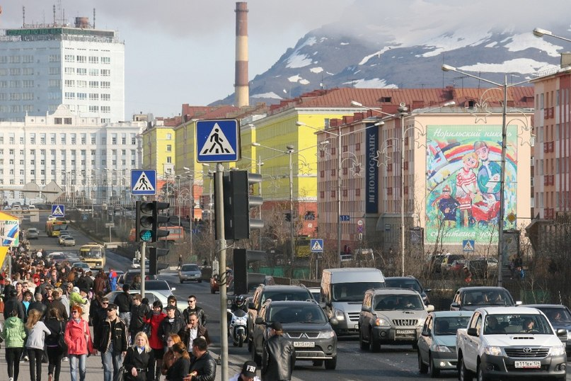
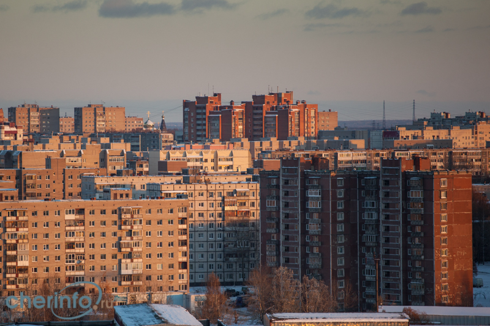
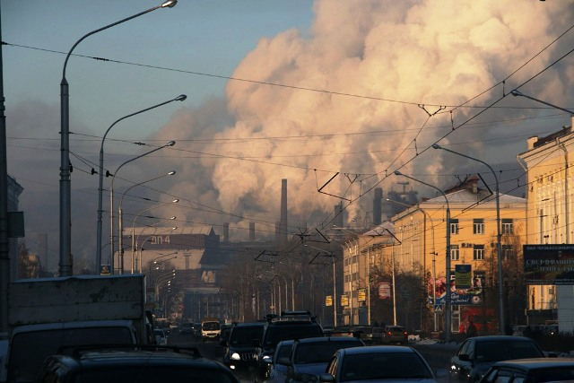
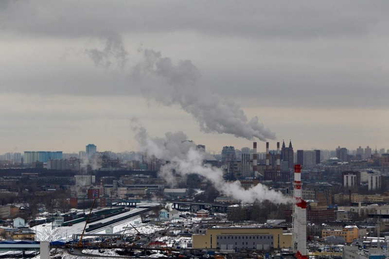
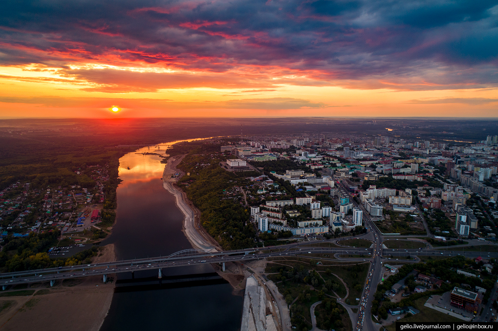
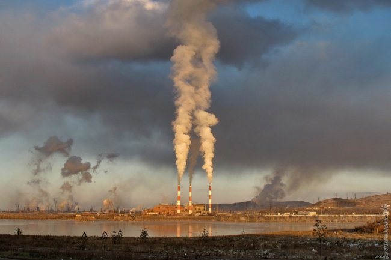

Норильск
Годовой объем выбросов в атмосферу Норильска составляет 1959,5 тысяч тонн,
99,5 % приходится на стационарные источники,
а основной вклад в загрязнение вносит градообразующее предприятие "Норильский никель".

Череповец
364,5 тыс. тонн, 95 % приходится на стационарные источники,
а основной вклад в загрязнение города вносит металлургический комбинат "Северсталь".

Новокузнецк
321 тыс. тонн (90,8 % - стационарные источники).

Липецк
322,9 тыс. тонн (91,3 % - стационарные источники, в основном Новолипецкий металлургический комбинат).

Уфа
205,5 тыс. тонн (65,4 % - стационарные источники).

Магнитогорск
255,7 тыс. тонн (89,9 % - стационарные источники, в основном Магнитогорский металлургический комбинат).